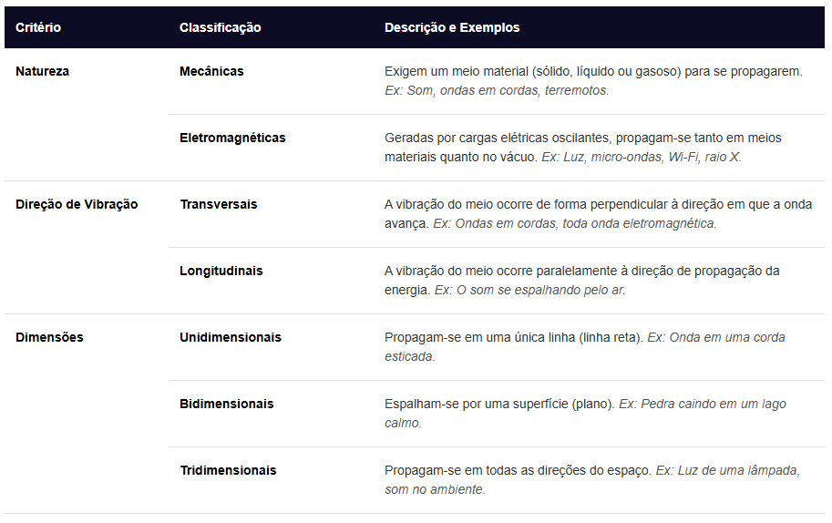

Ondas
Ondas geram perturbações que se propagam pela superfície em todas as direções, fazendo com que os pontos atingidos passem a oscilar em torno de uma posição de equilíbrio. Portanto, a onda transfere energia para as partículas da superfície da água. Se houver um corpo flutuando nessa superfície – uma folha de árvore, por exemplo –, ao ser atingido pela perturbação, ele oscilará durante determinado intervalo de tempo em torno da sua posição de equilíbrio.
Elementos de uma Onda:
Para descrever matematicamente uma onda periódica, analisa-se a sua estrutura geométrica:
Crista: O ponto mais alto da onda.
Vale: O ponto mais baixo da onda.
Amplitude (A): A distância do eixo central até uma crista ou um vale. Está diretamente relacionada à quantidade de energia carregada pela onda.
Comprimento de onda (λ): O tamanho de uma oscilação completa, medida como a distância entre duas cristas ou dois vales consecutivos.
Período (T): O tempo necessário (em segundos) para que uma onda complete um ciclo.
Frequência (f): O número de oscilações completas por segundo, medido em Hertz (Hz).
Classificação das Ondas:
As ondas podem ser separadas por três critérios fundamentais:

Fórmulas Fundamentais:
As relações matemáticas mais cobradas em vestibulares e exames como o Enem são:
Relação Período e Frequência:
Equação Fundamental da Ondulatória: relaciona a velocidade de propagação (v), o comprimento de onda (λ) e a frequência (f).
v = λ ⋅ f
Equação de Taylor: Determina a velocidade de um pulso mecânico em uma corda tensionada com força F e densidade linear μ.
Fenômenos Ondulatórios:
Qualquer tipo de onda pode interagir com obstáculos ou outros meios, gerando diferentes comportamentos:
Reflexão: A onda atinge uma barreira e retorna ao meio original, mantendo velocidade, frequência e comprimento de onda intactos (ex: eco).
Refração: A onda muda de meio de propagação, alterando sua velocidade e comprimento de onda, mas mantendo a frequência original invariável.
Difração: Capacidade da onda de contornar obstáculos ou passar por fendas de tamanho semelhante ao seu comprimento de onda (ex: ouvir alguém atrás de um muro).
Interferência: O encontro de duas ou mais ondas, que podem se somar temporariamente (interferência construtiva) ou se anular (interferência destrutiva).
Polarização: Filtragem de ondas transversais para que passem a vibrar em apenas uma única direção espacial (ex: óculos de sol polarizados).
Ressonância: Ocorre quando um sistema físico é forçado a oscilar por uma fonte externa na mesma frequência natural de oscilação do sistema, aumentando drasticamente a sua amplitude (ex: taça de cristal quebrando com o som da voz).